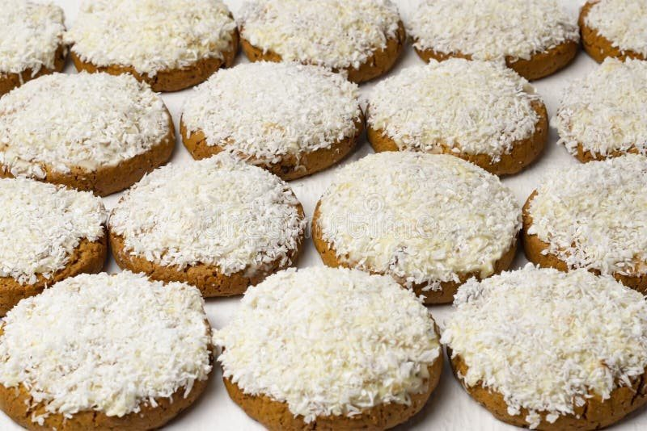

Doces · Biscoitos
Biscoitinhos coloridos

Ingredientes
- ¾ xícara de margarina
- ½ xícara de açúcar
- 1 ½ xícara de farinha de trigo
- 1 pacote pequeno (50 g) de coco ralado
- 1 colher (sopa) de água
- 1 colher (sopa) de chocolate em pó
- Margarina para untar
Modo de preparo
- Aqueça uma tigela em banho-maria. Coloque a margarina e o açúcar na tigela e bata bem, com uma colher de pau, até obter uma mistura cremosa, com mais volume.
- Junte a farinha de trigo e o coco ralado. Misture bem, até formar uma massa compacta e uniforme (acrescente a água, se for necessário, para ligar a massa).
- Divida a massa ao meio e acrescente o chocolate em pó a uma das partes. Misture bem até a massa voltar a ficar homogênea.
- Com um rolo de cozinha, abra uma das metades de massa, sobre um pedaço de papel-manteiga, até formar um retângulo de 17 x 22 cm. Faça o mesmo com a outra metade da massa.
- Coloque uma massa sobre a outra e enrole como se fosse rocambole. Embrulhe no papel-manteiga e leve à geladeira por 30 minutos ou até que fique bem gelada e firme.
- Preaqueça o forno em temperatura média (180 °C). Desembrulhe e corte em fatias com 1 cm de espessura. Leve ao forno preaquecido numa assadeira untada com margarina e asse por 25 minutos ou até os biscoitos ficarem dourados. Retire do forno, deixe esfriar e congele.
Observação
Para descongelar biscoitos no micro-ondas, use a potência de descongelamento: os de massa delicada descongelam em 2 minutos e os de massa mais pesada em 4 minutos. Congelamento: coloque os biscoitos num saco plástico, retire o ar e vede bem; etiquete e congele. Descongelamento: em temperatura ambiente por cerca de 1 hora.